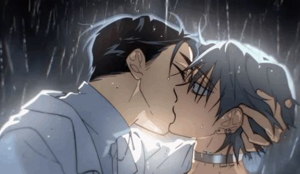
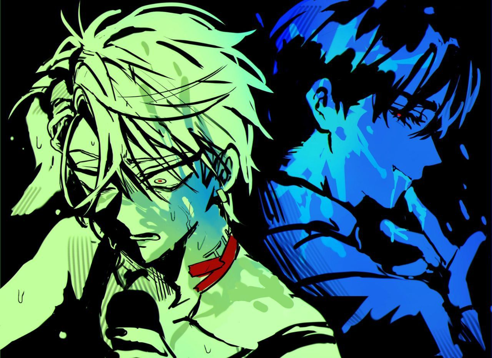

Obrigado por ser vítima das minhas emoções superficiais
Ivantill é um casal ficticio formado pelos personagens Ivan e Till, da web-série musical de animação coreana chamada Alien Stage (criada pelo estúdio VIVINOS em colaboração com o Studio Lico).

O sexto round de Alien Stage, embalado pela melancólica e intensa canção "CURE", consagrou-se como o ápice dramático da websérie da VIVINOS ao transformar um duelo musical em um cenário de pura tragédia e entrega. Diante da crueldade de um reality show alienígena onde os humanos competem por suas próprias vidas sob os olhares de uma plateia intergaláctica impiedosa, Ivan e Till foram colocados frente a frente em uma disputa na qual apenas um poderia sair vitorioso. Desde o início da performance, a disparidade de intenções ficou evidente: enquanto Till canalizava toda a sua angústia e revolta na música, focando sua mente em sua antiga paixão por Mizi, Ivan mantinha os olhos fixos em seu oponente, transformando cada verso em uma declaração unilateral e obsessiva. Ciente de que o sistema de votação do programa ditaria a morte inevitável do perdedor e que Till jamais venceria por meios convencionais devido ao seu estado emocional, Ivan tomou a decisão drástica de subverter o espetáculo e manipular o placar em benefício do outro. Em um rompante que chocou tanto os jurados alienígenas quanto os espectadores, Ivan quebrou o protocolo do palco ao se aproximar de Till e beijá-lo abruptamente, desestabilizando o fluxo da apresentação. Para selar o destino de ambos e garantir que a rejeição do público caísse inteiramente sobre si, ele simulou uma agressão ao segurar o pescoço de Till, fazendo com que seus pontos despencassem imediatamente no placar enquanto os de seu companheiro subiam. A reação das forças de segurança do evento foi imediata e letal, resultando no disparo contra Ivan, que desabou sangrando nos braços de um Till completamente paralisado pelo choque. O sacrifício final de Ivan deu um significado doloroso e irônico ao título da canção, pois, ao dar a vida para que a única pessoa que importava para ele pudesse sobreviver, ele encontrou sua própria cura para a opressão daquele mundo, deixando Till vivo, mas profundamente marcado pelo peso daquela perda.
허락해줘, 네 손 끝까지
heorakaejwo, ne son kkeutkkaji
허락해줘, 네 발 끝까지
heorakaejwo, ne bal kkeutkkaji
네 눈에 날 녹여주길
ne nune nal nogyeojugil
널 놓치고 싶지 않아
neol nochigo sipji ana
부디 내게 상처를 내줘
budi naege sangcheoreul naejwo
부디 날 아프게 해줘
budi nal apeuge haejwo
내가 한 방울도 안 남을 때까지
naega han bang-uldo an nameul ttaekkaji
너로 물들여
neoro muldeuryeo
무너질 이 별들까지
muneojil i byeoldeulkkaji
흐려질 영원에 묻힌
heuryeojil yeong-wone muchin
차가운 네 입술 끝에
chagaun ne ipsul kkeute
읽어줘 날, 그래, 날, 오-오
ilgeojwo nal, geurae, nal, o-o
내게 주던 날카로운 말도
naege judeon nalkaroun maldo
내 눈 밑 생채길 내도
nae nun mit saengchaegil naedo
네 혀 위 남아들길
ne hyeo wi namadeulgil
다 부숴도 괜찮아
da buswodo gwaenchana
지금 나의 상처를 봐줘
jigeum naui sangcheoreul bwajwo
지금 나를 치유해줘
jigeum nareul chiyuhaejwo
내 불안이 그저 가라앉도록
nae burani geujeo gara-andorok
네게 물들게
nege muldeulge
그려질 이 밤들 위에
geuryeojil i bamdeul wie
쓰러질 고요에 질린
sseureojil goyoe jillin
날 보는 네 눈동자에
nal boneun ne nundongja-e
마셔줘 날, 그래, 난, 오-오
masyeojwo nal, geurae, nan, o-o
끝없는 이 노래
kkeuteomneun i norae
서로를 향해 춤춰
seororeul hyanghae chumchwo
우리의 이야기
uriui iyagi
영원에 묻힌 채
yeong-wone muchin chae
무너질 이 별들까지
muneojil i byeoldeulkkaji
흐려질 영원에 묻힌
heuryeojil yeong-wone muchin
차가운 네 입술 끝에
chagaun ne ipsul kkeute
읽어줘 날, 그래, 날
ilgeojwo nal, geurae, nal
그려질 이 밤들 위에
geuryeojil i bamdeul wie
쓰러질 고요에 질린
sseureojil goyoe jillin
날 보는 네 눈동자에
nal boneun ne nundongja-e
마셔줘 날, 그래, 난, 오-오
masyeojwo nal, geurae, nan, o-o

Nat: Os ivantill são muito coisas nao identificadas, legais, divertidos e fofinhos!
{kind=link}